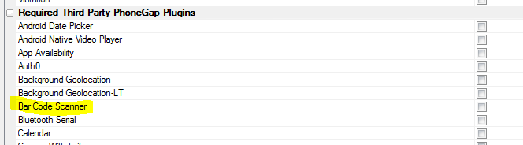
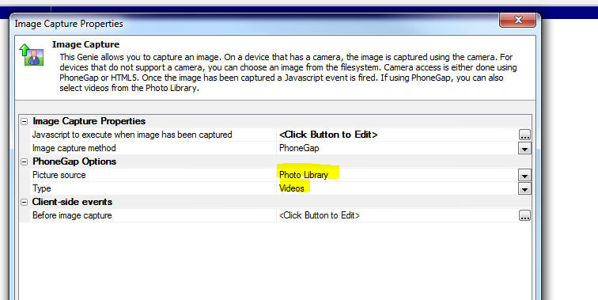
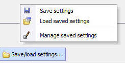

Videos
| UX Component - FormView Control | Capturing Signatures using the SignatureInk Editor |
A common requirement when using the FormView
control is capturing a signature. Alpha Anywhere
has a Signature control, but this control
captures signatures as bitmaps and is not ideal
for use in a FormView control. The Ink control
is better suited for this use case. In this video we show how a FormView control is configured to use the built-in SignatureInk editor. Watch Video Download Component Date added: 2016-06-30 |
| Node | Installing a Node Module from NPM and then Creating a Node Service to Call Methods in the Node Module |
The Xbasic code you write in your Web
applications can call methods in Node.js modules
that are installed from NPM (the Node Package
Manager). In this video we show how a Node module is installed into the Web Project folder and then how a Node Service is created so that methods in the Node module can be called. The particular Node module that we install in this video is called Tinify and we show how a Node Service is defined so that we can call into this module from Xbasic using the Node_request() function. Watch Video - Part 1 Watch Video - Part 2 Watch Video - Part 3 Date added: 2016-07-06 |
| UX Component - Ink Control | Customizing the Ink Control Overlay |
The Ink control 'overlay' displays a number of
tools that are used by the Ink editor (such as
the Pen selector, Eraser, etc.). You can
customize the appearance of the 'overlay' and
add your own tools (i.e buttons). In this video we show how you can add a new button to the Ink editor overlay. Watch Video Date added: 2016-07-08 |
| UX Component - Ink Control | Setting the Ink Control Background Image |
Setting the background image in the Ink Control
is a common practice. In this video we discuss
various aspects of how you can set the Ink
control image background and control whether the
UX goes dirty when the Ink background is set. Watch Video - Part 1 Watch Video - Part 2 Date added: 2016-07-06 |
| UX Component - Ink Control | Using the Ink Control to Capture Signatures |
The UX Component has always had a built in
Signature Capture control. However, it is also
possible to use the Ink control to capture
signatures. The primary benefit of using the Ink
control to capture signatures is that the
signature is captured using the Ink format,
which is an ascii format, rather than as a PNG
image, which the Signature Capture control uses. In this video we show how to configure the Ink control to capture signatures. Watch Video Date added: 2016-07-08 |
| UX Component - ViewBox | Using a ViewBox as the List's Detail View |
A common pattern when building mobile
applications is to use a List control with a
Detail View. When the user taps on a row in the
List, the Detail View shows the details for the
selected row. This pattern is used extensively,
especially for offline applications where the
data in the List is intended to be updateable. However, there are many cases where the List is not intended to be updateable and a much 'lighter weight' solution can be achieved but not turning on the List's 'Has Detail View property' and instead, using a ViewBox to display details for the selected row in the List. An even lighter weight solution can be achieved by using a ViewBox to replace the List. So you end up with a ViewBox to display a list of records and another ViewBox to display details for the selected record. Watch Video - Part 1 Watch Video - Part 2 Download Component Date added: 2016-07-09 |
| UX Control | Building a Custom Image Gallery using the List and Ink Control |
The List and Ink Control can be used to build a
custom Image Gallery in which the List is used
to display thumbnails of the available images
and when the user taps on a particular image,
the full size image is shown in the Ink control.
The advantage of using the Ink control to
display the image is so that you can take
advantage of the Ink controls pinch-zoom
features and pan features to scale the image and
to pan around to see details of different parts
of the image. The ability to actually draw ink
(which of course is the primary purpose of the
Ink control) is not used in this case. Watch Video - Part 1 Watch Video - Part 2 Watch Video - Part 3 Download Component Date added: 2016-07-16 |
| UX Component - List Control | Options for Handling Write Conflicts when Syncing Data |
When you build a disconnected mobile
application, there is always a chance that the
user will get a write conflict when they sync
data that was edited while they were offline.
This could happen because some other user
has committed a change to a record before
another user could commit their change. By default, when a write conflict occurs, the information about the conflict is sent to the user and the user can resolve the conflict by selecting 'Their value' or 'My value'. However, there are other powerful programmatic options for handling write conflicts. In this video we discuss the various techniques for handling write conflicts. Watch Video - Part 1 Watch Video - Part 2 Date added: 2016-07-21 |
| Grid Component | Preventing User from Closing Pop-up Window if Grid or a Linked Child Grid is Dirty |
It is common in web applications to have buttons
that open a Grid component in a pop-up window.
The Action Javascript builder when you build
this action has a built-in property that allows
you to prevent the user from closing the window
if the Grid shown in the window is dirty. But
what if the Grid shown in the window has Linked
child Grid components? You might want to also
check that the child Grids are not dirty before
the window can be closed. In this video we show how this can be done. Watch Video Date added: 2016-08-04 |
| UX Component - FormView Control | Creating Complex Form Layouts using the Flow and Column Layout Containers |
When you lay out a Form using the FormView
control, by default, the controls on the form
are rendered with one control per line and each
control taking up the full width of the FormView
control. If you want to create a more complex
Layout you can either switch from Genie mode to
the Freeform mode, or you can use Flow and
Column Layout Containers to control the layout
of your Form. In this video we show how a complex Form layout is achieved using Column and Flow layout containers. Watch Video - Part 1 Watch Video - Part 2 Download Component Date added: 2016-08-27 |
| UX Component | Adjusting Colors and Fonts in a Stylesheet |
Alpha Anywhere has always allowed you to edit a
stylesheet used by a component to change any of
the CSS defined in the stylesheet. But when you
simply want to change some colors in a
stylesheet, using the style editor may be more
than you need. In this video we show how you can easily adjust colors and fonts in a style. NOTE: This option is only available for 'new' styles (AndroidLight, AndroidDark, iOS7, Alpha) as these styles are based on SASS. Watch Video Date added: 2016-09-14 |
| UX Component - ControlBar Control | Introduction to Basic Concepts |
This video demonstrates basic concepts of the
ControlBar control. Watch Video - Part 1 Watch Video - Part 2 Date added: 2016-09-14 |
| UX Component - ControlBar Control | Updating ControlBar Data - Dynamic Text |
This video demonstrates how you can update the
data in the ControlBar's data. This allows you
to put dynamic text in the Controlbar. We also
show how the ControlBar can be animated when it
is refreshed. Watch Video - Part 1 Watch Video - Part 2 Date added: 2016-09-14 |
| UX Component - ControlBar Control | Using Watch Events to Update ControlBar Data |
The ControlBar data can be updated automatically
in response to certain events in the UX (such as
the UX going dirty, a List going dirty, etc.) or
by a change in the value of one or more
controls. In this video we show how you can configure watch events to automatically update ControlBar data. Watch Video Date added: 2016-09-14 |
| UX Component - ControlBarControl | Adding a Button to a ControlBar |
In this video we show how you can add a button
to a ControlBar and then associate an action
(i.e. some Javascript code) to run when the
button is tapped. Watch Video Download Component Date added: 2016-09-14 |
| UX Component - ControlBarControl | Adding a Button-Toggle to a ControlBar |
In this video we show how you can add a
Button-Toggle to a ControlBar. Toggle buttons
can either be two-state (switching between a
true and a false state), or multi-state (each
click advances to the next button state). The video shows how the state of a Button-Toggle is used to control what action a button performs when clicked. Watch Video Download Component Date added: 2016-09-14 |
| UX Component - ControlBarControl | Adding a Button-List to a ControlBar |
A common pattern in mobile apps is to have a
button bar at the bottom of the screen with a
series of buttons that allow you to select the
active Panel that is shown on the device.
Typically, these buttons are spread out so that
they fill the width of the screen. The button-list control is ideal for implementing this pattern. In this video we show how a Button-List can be configured to fill the width of the screen and to select a Panel Card in a Panel Layout when one of the buttons in the Button-List is tapped. Watch Video - Part 1 Watch Video - Part 2 Watch Video - Part 3 Download Component Date added: 2016-09-14 |
| UX Component - ControlBar Control | Selecting the Active ControlBar Layout |
A ControlBar can have multiple Layouts. In this
video we show how you can dynamically select the
Layout to show. Watch Video - Part 1 Watch Video - Part 2 Download Component Date added: 2016-09-14 |
| UX Component - ControlBar Control | Showing a Disclosure |
A disclosure can be some explicitly defined
HTML, or it can be another Layout. In this video
we show how a disclosure, defined as a
ControlBar layout, is shown. Watch Video Download Component Addendum: One of the more unusual disclosure types is Outside-After (and Outside-Before) which display the disclosure perpendicular to the parent Layout. In this video we show how the disclosure is rendered when the Outside-After type is selected. Watch Video - Part 2 Date added: 2016-09-14 |
| UX Component - ControlBar Control | Showing a List in a Disclosure |
You can display standard UX controls (such as
Lists, Buttons, Input controls, etc.) in a
disclosure. In this video we show how a list is
displayed in a disclosure. Watch Video - Part 1 Watch Video - Part 2 Download Component Date added: 2016-09-16 |
| UX Component - ControlBar Control | Setting the Selected Button in a Button List using Javascript |
The selected button(s) in a ControlBar Button
List can be set programmatically using
Javascript. It is also possible to completely
change the buttons shown in a Button List
programmatically. In this video we show how this is done. Watch Video Download Component Date added: 2016-09-21 |
| UX Component | Google Address Auto-complete |
A commonly seen feature in many web and mobile
applications is address auto-complete. As the
user starts typing an address into a textbox, a
list of suggested address is shown and the user
can select from the list. This feature is
powered by Google Maps. In this video we show how you can turn on the Address Suggest feature for any textbox control on a UX. NOTE: Textbox controls in Repeating Sections are not supported. Watch Video - Part 1 Watch Video - Part 2 Date added: 2016-09-16 |
| UX Component - ControlBar Control | Defining Javascript in a ControlBar - Understanding the 'This Object' Option. Using Javascript function in a template. |
When you define Javascript functions in a
ControlBar (and also a ViewBox and FormView
control), you can specify where the Javascript
should be stored. The options are: At the
control level, at the UX level and 'This
object'. This video explains the options and discusses why the 'This object' option is best. It also describes how functions defined at the 'This object' level can be referenced in templates. Watch Video Download Component Date added: 2016-09-28 |
| UX Component - ControlBar Control | Dynamically Showing and Hiding Lines in a ControlBar Layout |
A ControlBar layout can have multiple Lines.
Each Line in a Layout can be dynamically shown
or hidden. This video shows how a show expression can be defined for a Line in a ControlBar Layout Watch Video Download Component Date added: 2016-09-28 |
| UX and Grid Component | Sending SMS Messages using the Twilio Service |
You can send SMS messages from the Grid and the
UX. The messages are sent using the Twilio
service, so you will need a Twilio account. You
can use Action Javascript to define the action
which sends the message. There are a large number of options for customizing the message, such as sending messages in different languages, depending on the user preference. In this video we show how a button was defined in the UX to send a message. The phone number and message body are read from controls on the UX. Watch Video Date added: 2016-09-29 |
| UX Component | Creating Offline HTML5 Applications using the Application Cache |
The Application Cache (an HTML5 feature widely
supported by various browsers) allows you to
build 'offline' applications - i.e. applications
that can be loaded into the browser even if
there is no internet connection.
In order to load
the application initially an internet connection
is obviously needed. But once the application
has been loaded initially, all of the files
(e.g. CSS.Javascript, images, etc.) referenced
by the application are cached in the browser and
an internet connection is not needed to load the
application subsequently. If the application is updated, then if an internet connection is available when the app is loaded, the new version of the app is downloaded and cached in the browser. In this video we show how offline HTML5 applications can be created using the Application Cache feature. NOTE: These 'offline' HTML5 applications do not require PhoneGap! Watch Video - Part 1 Watch Video - Part 2 Date added: 2016-09-29 |
| UX Component - List Control | Saving and Restoring List Settings to Quickly Define New Lists |
The List control is one of the most commonly
used controls in a UX component. But because of
the richness of the List, there can be many
properties that need to be set to configure a
List. After you have configured a List, you can
save all of the settings for the List in a named
file. Then when you define your next List, you
can restore the settings from the named file -
saving a lot of time. This video demonstrates how List settings can be saved and restored. Watch Video Date added: 2016-109-02 |
| UX and Grid Component | Using the Javascript Code Library |
The Javascript Code Library is available in all
contexts where Javascript can be edited. The
Code Library is ideal for storing snippets of
code that can then be pasted into the Javascript
you are editing. In this video we walk through the various features of the Javascript Code Library. Watch Video Date added: 2016-109-05 |
| UX Component - ControlBar Control | Adding an Edit ControlBar Item to a ControlBar |
A ControlBar typically contains text and
buttons, but a common use case is to build a
Search ControlBar that uses an edit control in
the ControlBar. In this video we show how the edit ControlBar item type can be used to build a Search feature. Watch Video Download Component Date added: 2016-10-08 |
| UX Component - ControlBar Control | Displaying a Modal Pop-up Form using a Disclosure |
A common pattern in many applications (both
Mobile and Desktop web) is to display pop-up
modal forms to collect some information from the
user. Displaying pop-up modal forms using the
ControlBar is very easy and extremely powerful.
This video shows how a ControlBar 'disclosure' is used to display a pop-up modal form. The 'a5-action' attribute in the Disclosure HTML is used to invoke actions defined in the ControlBar's Action pane. Watch Video - Part 1 Watch Video - Part 2 Download Component Date added: 2016-10-08 |
| UX Component - FormView Control | Displaying Calculated Values on a FormView Control |
When you design a FormView control you may want
the form to display calculated values (typically
computed from other fields in the form). Since
the Form is really just an HTML template that is
rendered using Alpha Anywhere's client-side
templating features, this is easily done. In this video we show how a calculated field is added to the FormView control. Watch Video Download Component Date added: 2016-10-10 |
Features
UX Component - ControlBar Control - A new control type is available in the UX component. The ControlBar is primarily intended for creating the content that appears in Panel headers and footers and it is a much easier and vastly more flexible way for populating a Panel header or footer compared with the previous technique of adding standard UX controls (such as buttons and static text controls) to the header or footer.
For more information on ControlBars, please see the User Guide documentation here.
You can also refer to the API documentation here.
To see videos on the ControlBar refer to the Videos section of this document.
UX Component - ControlBar Control - Modal Dialogs - A new property (Auto-hide disclosure) for disclosure-buttons allows the disclosure opened by the disclosure-button to be modal. This means that the user will not be able to tap anywhere off the disclosure to close the disclosure, but must tap a button on the disclosure itself in order to close the disclosure. To make a modal disclosure:
- Set the Auto-hide property to false.
- Set the Auto-hide disclosure property in the Common Settings section to auto
- Put a button on the disclosure to close the disclosure. The button's action should execute this Javascirpt: this.hideDisclosure()
For example, in the image shown below when the user taps the Settings button, the disclosure (a modal dialog) prompting for two input fields is shown. The user cannot close the disclosure by clicking off the disclosure. The only way to close the disclosure is by tapping the OK or Close buttons.
UX Component - ControlBar Control - Miscellaneous Improvements
When you define HTML for a Disclosure you can now use the a5-actions attribute in your HTML to bind to ControlBar Actions. For example:
<div a5-action="action1">
Tap here to do some task
</div>
A new type of ControlBar Item is available. The Edit item allows you to display an input control in the ControlBar.
The button-disclosure ControlBar item now supports user defined events such as click, downhold, etc.
UX Component - ControlBar Control - Samples - When you open the ControlBar builder you can now get a quick start by loading a sample ControlBar. On the 'Home' tab in the ControlBar builder, click the Load Sample ControlBar hyperlink.
UX Component - ControlBar, ViewBox and FormView Controls - Defining Javascript - In the builder for the ControlBar, ViewBox and FormView, you can define Javascript functions.
When you define you Javascript functions, you can specify where the Javascript should be stored. The options are:
- With the control
- With the UX
Now, a new option is available:
- This object
When you select the 'With the control' option, the Javascript is stored in the control definition, (which means that if you copy the control to another UX component, the Javascript you define comes along - this would not be the case if you use the 'With the UX' option). However, at render-time for both the 'With the control' and 'With the UX' options, the Javascript functions you define are global functions. That means that if you have a UX with multiple ControlBar, ViewBox or FormView controls, and they each define a different function called (say) 'func1' at the 'With the control' option, the definition of the global func1 function will be whatever definition exists in the last control that was rendered.
However, if you define the Javascript at the 'This object' level, then your Javascript functions become method of the ControlBar, FormView or ViewBox object and a definition in one control cannot overwrite a definition in another control.
To invoke a function defined at the 'This object' level, you must use a pointer to the object as a prefix.
For example
this.func1()
(assuming that the this object is a reference to the ControlBar, FormView or ViewBox object).
In cases where the this object does not reference the ControlBar, FormView or ViewBox object, you can still call the function by first getting a pointer to the ControlBar, FormView or ViewBox object. For example
var obj = {dialog.object}.getControl('myViewBox1');
obj.func1()
The ControlBar, FormView and ViewBox controls allow you to use client side templates. If you templates you can reference a Javascript function defined at the 'This object' level as follows:
{@[scope].func1}
The [scope] keyword is a reference to the object.
UX Component - ControlBar Control - Show/Hide Lines in a ControlBar Layout - You can now dynamically show or hide lines in a ControlBar layout.
To define a Show expression for a Line, click the Line Properties button on the ControlBar layout editor.
UX Component - PhoneGap Shell V2 - A new PhoneGap shell template is now available. When developing a PhoneGap application, a shell is a huge productivity boost because you can test new versions of the app you are developing by quickly loading the app into the shell that is running on your device. You do not have to submit your app to PhoneGap build every time you want to test a new version of your app.
The V2 shell improves on the previous PhoneGap shell that shipped with Alpha Anywhere in several key areas.
To create a new PhoneGap shell, open the UX builder and create a new UX component. Select PhoneGap-Shell-V2 from the list of templates.
Once you have created the UX component using the template, save it and submit it to PhoneGap build using the PhonGap build genie (accessed from the PhoneGap button on the Web Control Panel). Then load the shell onto your device.
Key benefits of the V2 shell include
- Cleaner look - achieved by using ControlBars to implement the shell component
- Full screen when running app - The Back and Previous buttons are hidden by default and are shown on demand by tapping on a small icon in the lower right corner of the screen.
- Multiple server address - You can now use the same shell with multiple servers. Previously you have to build a shell for each server as the server address was hard coded into the shell. Now you can specify as many server addresses as you want and then select which address should be active.
- Test server address - You can now test if the server address you selected is valid. It is important to know if you have specified a valid server address or else the shell will not be able to load components.
- Edit component names - After you enter a component name, you can edit the value. In the old shell you could not edit values.
- Scan values when filling in forms - The shell has two forms that need to be filled in - when adding a new component, and when defining a new server address. In both of these forms you can press a Scan button to scan a QR code that encodes the value to be entered into the form. To create the QR codes, go to the UX component, Click the Menu button and select the PhoneGap shell QR codes... menu item.
- See list of PhoneGap plugins - The Settings screen menu allows you to select a command that shows the list of plugins that the shell has loaded.
- Android back button - full support for the Android Back button. For example, if you press the back button while on the screen that shows your running component, you will return the shelll home page.
The various screen shots shown below illustrate various of the new V2 features of the PhoneGap shell.
1. PhoneGap Shell V2 - Main Screen
2. PhoneGap Shell V2 - Main Screen Menu
3. PhoneGap Shell V2 - Adding a new component to the list
4. PhoneGap Shell V2 - Generating a QR code for the component name from the dropdown menu in the UX builder
5. PhoneGap Shell V2 - QR code type
6. PhoneGap Shell V2 - Showing a running component - Back and Refresh buttons are hidden
7. PhoneGap Shell V2 - Showing a running component - Back and Refresh as hidden shown after tapping on the menu icon
8. PhoneGap Shell V2 - Settings screen menu
9. PhoneGap Shell V2 - Adding a new server address
10. PhoneGap Shell V2 - Generating a QR code for the server address and description to avoid having to type into the dialog prompting for server address

11. PhoneGap Shell V2 - Testing a server address
UX and Grid Component - Javascript Library - Date Arithmetic - A new method has been added to the date object prototype. The .addTime() method is now a built-in method of the date object. This method takes two arguments:
- interval
-
units
The possible values for interval are:
- year
- quarter
- month
- week
- day
- hour
- minute
- second
Units is a number.
Examples:
//add 1 year to a date object
var d1 = new Date();
d2 = d1.addTime('year',1);
//add 1 year, 3 months, 10 days to a date value
var d1 = new Date();
d2 = d1.addTime('year',1).addTime('month',3).addTime('day',10);
UX Component - .getDateValue() Method - When you use the .getValue() method to retrieve the value of any control, a string is returned, regardless of the control's defined data type. In the case of numeric and logical types, casting the value to the required Javascript type is easy (using the $u.s.toNum() or $u.s.toBool() ) functions, but casting to a date value is harder because the data value has to be parsed. Therefore a new method has been added to get the value in a control as a date object.
For example:
var d = {dialog.Object}.getDateValue('dateofbirth')
The date string in the control is parsed into a date object using the client-side date and time format defined in the UX component.
UX Component - Action Javascript - PhoneGap - Scan Barcode - A new action in Action Javascript allows you to scan barcodes in a PhoneGap application.
The action is called PhoneGap - Scan Barcode. The builder for the action is shown in the image below.
You can define an onSuccess Javascript event handler that gets called if the scan was successful. You Javascript code can reference:
- result.text -- the scanned text
- result.format -- the format of the barcode
- result.cancelled - 0 if the scan was successful, 1 if the user cancelled the scan
IMPORTANT: When you build the PhoneGap application be sure to select the Bar Code Scanner plugin in the Third Party PhoneGap Plugins section.

UX Component - PhoneGap - Android - onAndroidBackButton - When running in a PhoneGap shell the client-side onAndroidBackButton event will fire when the user taps on the system back button. If you do not define an event handler for this event, then when your app is running and user taps on the Android Back button, your app will exit.
If you define a handler for this event, then when the user taps on the Android Back button, the app will not exit and the code in your event handler will execute. You can typically use this event to move to the previous 'state' of your app. For example, if the user had just opened a window, you would close the window.
An approach that you might take is to add a new item to a 'stack' every time the user executes an action in your app that should be undone by pressing the back button.
Then when the user presses the Back button you can execute the top action on the stack and then pop that action off the stack. When there is nothing left on the stack and the user presses the Back button you can exit the app. To do this your event handler would execute this code.
e.event.preventDefault();
navigator.app.exitApp();
UX Component - List Control - AfterRefreshData Event - A new event has been added to the List control After the List control's data has been refreshed (using the {dialog.object}.refreshListData() method) the AfterRefreshListData event will fire. This event is defined in the Events section in the List Builder.
UX Component - Action Javascript - Image Capture - Camera/Photo Library Action - Videos - This Action Javascript action can now let the user select a Video from the Photo Library. This only works in a PhoneGap application.
The Type property in the image shown below is visible if the Image capture method is set to PhoneGap and the Picture source property is set to Photo Library.

Once the user has selected a video from the Photo Library, the Javascript defined in the Javascript to execute when image has been captured property is executed.
Your code can reference e.fileSystemURL, the filename of the video file. You could use this value to set the value of the VideoPlayer control so that the video can be played back, or you might want to upload the video to your server, or to Amazon S3.
For example
{dialog.object}.setValue('myvideoplayer',e.fileSystemURL)
UX Component - Google Address Suggest - Address Filtering - You can now specify a filter to filter the addresses shown. For example, you might want to restrict address to a certain country.
For example, in the image below, addresses in New Zealand are shown.
You can also use a Javascript function to specify the filter. For example:
javascript:myfunction
In the above example, the Javascript function myfunction should return the Filter as an object. For example:
function myfunction() {
return {country: 'NZ'};
}
Note: The Javascript function is called when the auto-complete field is initialized. It is not called every time the user types an address into the field.
UX Component - Number Formats - Two new properties in the UX allow you to specify the format that users will use when entering numbers.
The Number format - decimal character allow you to specify what character the user will use when entering decimal places.
The Number format - thousands separator allow you to specify what character the user will use when entering formatted numbers above 999.
You can enter the explicit character to use or 'period' (which is simply a symbol for a period) or 'comma' (which is simply a symbol for a comma).
These properties can also be set automatically, and dynamically, using session variables. The values in these session variables could be set when a user logs in by referring to some user preference setting stored in a table on the server.
The session variables are:
- session.__protected__clientSideDecimalCharacter
- session.__protected__clientSideThousandsSeparatorCharacter
IMPORTANT: If the regional settings on your server do not use a period as the decimal character then it will be important to update existing UX components and set the value in these two properties if the defaults (period for decimals and comma for thousands separator) are not correct.
Build 3892
Technical Note
This change is made necessary by an internal change to the {dialog.object}.getValue() method. Previously, if a user in (say) Spain (where the decimal character is a comma) entered a value (say 234,34) into a numeric textbox, and then used the .getValue() method to read the value in the control, the .getValue() method returned:
234,34
Now, if the user has specified that the Number format - decimal character property is a comma, .getValue() will now return this (a string value)
234.34
This is an important change because if you wanted to perform a numeric calculation using this number you can simply use the Javascript Number() function to convert the string to a number and then do the calculation. For example
var newVal = Number({dialog.object}.getValue('NUMBER1')) * 12
UX Component - Internationalization Helper - The Internalization Helper (accessed from the button in the UX builder), now has a new option to perform all actions at once, rather than requiring actions to be executed individually.
UX and Grid Component - Javascript Editors - Code Library - A code library is available in all contexts where Javascript can be edited.
To open the Code Library, click the Code Library icon (shown highlighted in yellow below) on the toolbar.
To add a code snippet to the library, highlight the code in the editor and then click the 'Add' button (left most button on the button bar at bottom of the Code Library window)
To insert a code snippet into the code you are editing either double click on the item or click the 'Insert' button (3rd from left on button bar).
Features of the Code Library include:
- Mark an entry as a favorite by tapping the 'Favorite' button in the button bar. To un-mark a favorite, click the 'Favorite' button
- Change the order of items in the list by clicking on the Up and Down buttons in the button bar
- Define multiple Code Libraries. To add a new Code Library, click on the Menu button in the button bar.
- Filter entries in the list by typing a filter string into the Filter textbox.
- Filter favorites by clicking on the Favorite icon to the right of the Filter textbox
- Preview the contents of each item in the List by clicking on the 'View' button (5th button from the left on the button bar). This will open a modeless window showing the contents of the item with focus. As you select different items in the list, the View window is automatically updated.
- While the View window is shown you can edit entries in the Code Library
- When editing entries, you can insert \ip to control where the insertion point should be shown after a Code Library item is inserted into the code you are editing.
- The Code Libraries are stored in files. To open the folder where the Code Libraries are stored click the Menu button and select the Manage Code Libraries menu item.
UX Component - System SVG Icons - Alpha Anywhere now comes with a set of pre-defined SVG icons that can be used with any style. These SVG icons are the same icons that the new Alpha stylesheet uses.
When you are using a stylesheet other than the the Alpha stylesheet, when you open the SVG Icon picker you will see that the system SVG icons are shown in a category called System SVG Icons. In addition, the Class dropdown will have three special auto-generated classes that can be applied to the SVG icons. These are
- icon
- iconSizeable
- iconDisabled
The definition of these classes are shown below.
If you do not select any class, some of the images will not render properly because the stroke color of the SVG icon is not defined.
You must select either icon or iconSizeable for the icons to render correctly.
You will notice that the icon class defines a explicit size for the icon (26 x 26 px). Therefore changing the size using the slider on the dialog will have no effect.
If you would like to be able to size the icon, you should select the iconSizeable class.
You can also define your own classes in the component's Local CSS, or Linked CSS to apply to the SVG icon.
.icon {
vertical-align: middle;
width: 26px;
height: 26px;
fill: #333;
stroke: #333;
}
.iconSizeable {
vertical-align: middle;
width: auto;
height: auto;
fill: #333;
stroke: #333;
}
.iconDisabled {
opacity: .25;
}
UX Component - Text Area - Mobile Devices - If you have a Text Area control on a mobile device, it can be difficult to scroll the text in the text area without scrolling the Panel that the Text Area is in,
On iOS devices you can scroll the text in the Text Area using a two finger drag. However, this is a cumbersome and not obvious gesture.
A new pre-defined control is available to create a Text Area that is optimized for mobile devices.
The image below shows the Text control with a special slider on the right hand side that will allow you to easily scroll the text in the Text Area control.
SQL Server LocalDB - Alpha Anywhere now automatically installs SQL Server LocalDB when you install Alpha Anyhwere. SQL Server Local DB is installed. This means that as soon as Alpha Anywhere has been installed, developers will be able to start building applications that use a SQL database, even if they don't access to a SQL database of their own.
According to the Microsoft documentation:
LocalDB installation copies a minimal set of files necessary to start the SQL Server Database Engine. Once LocalDB is installed, you can initiate a connection using a special connection string. When connecting, the necessary SQL Server infrastructure is automatically created and started, enabling the application to use the database without complex configuration tasks. Developer Tools can provide developers with a SQL Server Database Engine that lets them write and test Transact-SQL code without having to manage a full server instance of SQL Server.
When AlphaAnwhere is started it automatically creates a named instance of LocalDB called AlphaAnywhere
To build a connection string to the LocalDB databse, use the SQL Server driver and specify the Version as 2016 and the Server Name as (localDB)\AlphaAnywhere.
When you select a connection string in the various genies and builders, a hyperlink appears at the bottom of the dialog that allows you to automatically create a LocalDB version of the sample Northwind database that is uses in many of the Alpha Anywhere tutorials and videos. When you click the hyperlink a named connection string called AADemo-Northwind is created.
UX Component - Starter Templates - Two of the starter templates listed when you create a new UX component have been recreated using ControlBars in the Panel headers and footers rather than individual UX controls. The versions created using ControlBars are smaller than the corresponding versions that do not use ControlBars.
Grid Component - HTML Editor - Customize Toolbar Icons and Layout - You can not choose your own icons for the HTML toolbar editor and you can customize the layout of the editor, rearranging the buttons, and leaving off buttons for features you don't want to expose.
UX Component - List Control - Save/load Settings - After you have defined the settings for a List control, you can now save the settings to a file on disk. Then when you begin defining a new List, you can restore previously saved settings. This can save a lot of time when setting up a List that is similar to a previous List you have created.
To save, load or manage your settings file, click on the Save/load Settings... button at the bottom of the List builder.
Select an option from the sub-menu that appears.

If you select the Manage saved settings option, Windows Explorer will show the folder where the settings files are stored and you can delete, or rename any of the files.
NOTE Saved settings are common to all web projects and all Workspaces. That means that it is possible to load a saved setting that will not work in your current context. For example, if you restore a saved setting for a SQL list that specifies a particular connection string, and that connection string is not present in the current Workspace, your List will not work until you fix the problems.
UX Component - Application Cache - Building Offline HTML5 Applications - You can now create a static HTML page for a UX component. This static HTML file can include a cache manifest. This will enable the static HTML page to work 'offline'.
Watch Video
- Part 1
Watch Video
- Part 2
Offline enabled HTML pages can be loaded into a browser even if no internet connection is available.
To turn on this feature, click the smart field for the Create a static HTML page with an application cache property, as shown in the image below.
When this property is checked, when you save the UX component, a special sub-directory in the Web Project folder is created. This directory is called StaticHTMLFileset and it contains the static HTML page with the rendered UX component and all of the files referenced by this page (e.g. Javascript, CSS and image files). The directly also contains an application manifest file which lists all of the files reference by the static HTML page. The application manifest file is linked in the head of the static HTML page by specifying a value for the manifest attribute in the <html> tag. For example:
<html manifest="cache_myuxcomponent.appmanifest">
When a static HTML page that includes a manifest is loaded, all of the files listed in the manifest are stored in the browser's ApplicationData storage area.
When a static HTML page is loaded, the browser checks to see if a cached version of the page and all of the files it references exists in the browser's ApplicationData storage area. If so, the page is loaded from the ApplicationData storage area. To determine if the cached version is stale or not, but browser will attempt to contact the server (if an internet connection is available) to check if a newer version of the manifest is available.
If a newer manifest is available, the browser will download and cache the new version of the static HTML page and its referenced files.
While the browser is downloading files listed in the manifest, a series of events will fire. You can specify event handlers for these events in your UX component.
When you click the smart field for the Create a static HTML page with an application cache property, you can automatically generate default code for the error, updateready and progress Application Cache events:
UX and Grid Component - Action Javascript - Send SMS Message using Twilio - A new action has been added to Action Javascript to allow you to send an SMS message. You will need an account with Twilio to use this feature.
The action allows you to:
- Specify an explicit 'to' number - the number to which you want to send the SMS message
- Call a Javascript function to return the 'to' number
- When specify the 'to' number using the 'explicit' option you can use a field value placeholder to specify the 'to' number - e.g. {phoneNumber}
To specify the message text you can:
- Specify an explicit message. The message can use placeholders for field values. You can also use special directives in the message body to send messages in different languages, depending on the user preference. See help text in the genie when you click the smart field to edit the message text.
- Specify a Javascript function to return the message text
- Specify an Xbasic function to return the message text.
You can also specify Javascript code to execute after the message has been sent.
You can either explicitly specify your Twilio credential, or you can reference a NamedResource which contains your credentials. You will need your Twilio SID, Token, and Phone Number (the phone number from which the SMS message is sent).
If you use the NamedResouce option, you can change specify different values for the SID, Token and Phone Number in your publishing profile.
To create a NamedResource, open the Web Project Properties dialog.
The screen below show the Action Javascript builder for the action.
reversearray() Function - You can reverse the order of items in an array with the reversearray() function.
Examples:
dim p[3] as n
p[1] = 1
p[2] = 2
p[3] = 3
reversearray(p)
?p.dump()
= 3
2
1
dim p[2] as p
p[1].name = "alpha"
p[2].name = "beta"
reversearray(p)
?p.dump_properties("name")
= "beta"
"alpha"
UX Component - List Control - Layout - Copy Property Value - In the Layout tab of the List Builder, when you are editing a column layout, you can now copy a property value from one column and paste it to multiple columns.
UX Component - List Control - Render Columns in Reverse Order - If you are using a right-to-left language (such as Hebrew), then you might want the columns in a Column layout to be rendered in reverse order. A new property in the List Properties allows you to reverse the column order.
Xdialog - Caption Fields - You can now define a caption (i.e. a watermark) for an input control on an Xdialog. When there is no text in the input control the caption shows. As soon as the user begins to type in the field, the caption is replaced by the user entered text.
To define a caption for an input control, use the caption directive within the %...% delimiters.
For example:
ui_dlg_box("Captions",<<%dlg%
[%caption=Enter Name%.60name];
[%caption=Enter City%.60city];
%dlg%)
UX Component - Google Address auto-complete - afterGoogleAddressSelect Client-side Event - A new client-side event is defined. This event is called after the user makes a selection from the Google address auto-complete list. The event gets the Google 'place' object with a wealth of information about the address the user selected. You can use this event to define a custom mapping of data from the 'place' object to controls on your component.
UX Ccomponent - ViewBox Control - Sample iOS Settings Screen - A new sample ViewBox can be loaded into the ViewBox builder.
The iOS Settings screen example is loaded by clicking the Load Sample ViewBox link on the Home tab of the ViewBox Builder.
The entire contents of the settings screen (i.e. each of the properties prompted for and the type of editor used for the property) is driven by the ViewBox data. For example, the settings screen in the above image is created using this data:
[
{text: 'Name', type: 'edit', editor: ['EDITORSET_1','EDITOR_1'],
name: 'name', value: 'John Smith'},
{group: 'Group 1', icon: 'svgIcon=#alpha-icon-home:icon', text:
'Item 1', type: 'switch', name: 'item1', value: true},
{group: 'Group 1', icon: 'svgIcon=#alpha-icon-shield:icon', text:
'Item 2', type: 'switch', name: 'item2', value: false},
{group: 'Group 1', icon: 'svgIcon=#alpha-icon-envelopeSolid:icon',
text: 'Item 3', type: 'switch', name: 'item3', value: true},
{group: 'Group 2', text: 'Notifications', type: 'disclosure', name:
'disclosure1'},
{group: 'Group 2', name: 'passFail', value: 'Pass', values: ['Pass','Retry','Fail'],
type: 'radio'},
{group: 'Group 2', name: 'colors', value: ['Red','Green'], values:
['Red','Blue','Green'], type: 'checkbox'},
{text: 'Phone', type: 'edit', editor: ['EDITORSET_1','EDITOR_1'],
name: 'phone',value: '123 456-7890'}
]
The ViewBox 'value' is a JSON string of the setting values. The settings can be initialized by using the .setValue() method and setting the ViewBox value to a JSON string of setting values.
NOTE: This control is must be used with the Alpha style as the icons in the data are SVG icons, used in the Alpha style.
NOTE2: The edit the text properties in the dialog you will need to add an editor set called EDITORSET_1 with a text box editor called EDITOR_1.
This sample ViewVox is a good example of how very rich user interfaces can be built very easily and efficiently using a ViewBox. For example to add a new setting to the ViewBox, simply add the definition to the ViewBox data.
UX Component - Google Visualization Libraries - When using the Google Visualization library in a UX component, it is no longer necessary to go to the Web Project Properties dialog to specify that the Google JSAPI library should be loaded. The Visualization libraries are now loaded automatically by the UX as needed.
UX Component - Goggle Address Auto-complete - In many applications (both web and mobile) it is common when typing in an address to get auto-complete suggestions, as shown in the image below. In the image shown, the user has begun typing an address into the Address control ('70 blanc') and a drop-down list of possible addresses is shown.
This is achieved using a feature of the Google Maps API.
You can now add this functionality to your any textbox in a UX
component.
Watch Video
- Part 1
Watch Video
- Part 2
NOTE: In order to use this feature you will need an API key from Google. You can get an API key for Google Maps Javascript from the Google site. This API key is the same key needed for Google Maps.
When the user makes a selection from the drop-down list, you can also specify that the individual parts of the address should populate other controls on the UX. For example, if the user were to select the first entry in the drop-down list shown above, you might want to insert '70' into a 'StreetNumber' control on your UX, 'Blanchard Road' into a 'Street' control, 'Burlington' into a 'City' control, and so on.
The genie that allows you to configure this feature makes it easy to set up these mappings.
To turn on GoogleAddressSuggest for any textbox control, set the Special type property to GoogleAddressSuggest.
Next click the smart field for the Special type settings property. This will open a builder appropriate for the special type you selected.
The builder allows you to specify how the address parts from the selected address should be mapped to individual controls on the UX component. You do not have to define any mapping if you don't want to map address parts to individual controls.
For each address part that you choose to map, you can specify if you want the 'long' or 'short' form of the string. For example, the long form of a state field might be 'Massachusetts', while the short form might be 'MA'.
You can also specify your API key.
NOTE: If you leave the API key blank then Alpha Anywhere will read it from the setting in Web Project Properties. If there is no setting in Web Project Properties then it will look for a file called GoogleMapsAPIKey.txt. This file should have the API key in it.
The Bias address suggestions to the user's current location prompt allows you to bias the address suggestions to the user's current location. So, for example, if the user is in Paris, the suggestions displayed by Google will show Paris addresses at the top of the list.
NOTE: Address auto-complete for textbox controls in Repeating Sections are not supported.
UX and Grid Component - Customize Style Colors and Fonts -
Editing the colors and fonts used in a style has always been
possible by editing the style sheet. For example, if you are using
the iOS7 style, you could edit this style and customize all colors
and fonts.
However, if you edit the style, you create your own copy of the style. That means that if Alpha subsequently modifies this style (for example, by adding new CSS classes for some new control type that is added to the UX), your style will not see these new classes unless you manually add them to your copy of the style.
Also, bringing up the style builder just to change one of the colors in the style seems like overkill.
A new option is now available for 'version 3' (e.g. iOS7,
AndroidDark, AndroidLight) and 'version 4' (e.g. Alpha) styles.
These styles use SASS variables to define the colors and fonts used
in the stylesheet.
Watch Video
To edit colors and fonts, click the smart field for the Customize style colors and fonts property.
The dialog in the image shown below will be displayed.

When you edit the colors and fonts using this builder, you are not editing the base style sheet. Instead you are storing your adjustments to the style in a separate file. This means that if the style sheet is changed by Alpha, you will get all of the edits applied to the style by Alpha, and you will still get your color and font changes.
To see the file in which your edits are stored click the Manage files hyperlink at the bottom of the dialog.
NOTE: When you customize the colors and fonts for a style, the edits apply to all components in your project that use the style. So, even though you might be in UXComponent1 when you edit the colors, UXComponent2 (for example), if it uses the same style as UXComponent1, will get the same edits to the colors and fonts.
If you want to delete the custom colors you have defined, open the editor, and click the Manage files hyperlink and then delete the styleTweaks.json file that contains the settings.
Xbasic Functions - sha512() function - Creates a hash using the SHA512 algorithm.
Syntax
result = sha512(c text [, L flagBinary])
If flagBinary is .t. the result is a blob.
Web Applications - Style Sheets - Alpha style - A new style sheet called Alpha has been released.
The Alpha style (which is a 'version 4' style) uses SVG icons (as opposed to CSS Icons which 'version 3' styles - such as iOS7, AndroidLight and AndroidDark used).
The Alpha style is primarily intended for use with UX components.
When you select the Alpha style (or any 'version 4' style), the builder displays a prompt allows you to select the 'compact' version of the style. For mobile applications the standard version of the style is appropriate. For desktop web applications, you might find the standard version of the style to be too large. Selecting the compact version of the style will render the component using smaller text, buttons, icons, etc.
The images below show a grid using the Alpha style. The first image is using the compact version of the style.
A notable feature of the new 'version 4' styles is the change in the naming convention for the CSS selectors. In 'version 3' and older style sheets, the CSS selectors include the style name in the selector. For example, in the iOS7 style sheet there is a selector called:
iOS7Button
In 'version 4' style sheets, the CSS selectors do not include the style name. So, the CSS selector for a button is now simply
button
As a result of this change, when using a 'version 4' style, it will not be possible to have a page with two different components, each of which uses a different 'version 4' style. On the other hand it will now be possible to dynamically change the style of a component from one 'version 4' style to another 'version 4' style without having to re-render the component.
UX Component - ViewBox Control - Capture Focus property - The ViewBox has a new property that allows you to specify if the ViewBox can capture focus. Be default, this property is set to true. However, in cases where you ViewBox contains standard HTML controls (such as INPUT or TEXTAREA controls) and you want the user to be able to type into these controls you should set the Capture Focus property to false.
PhoneGap App Builder - User Defined PhoneGap Plugin Library Manager - When you use the PhoneGap Builder to build a PhoneGap project, the Builder gives you a list of PhoneGap plugins to choose from. However, there are many more PhoneGap plugins than those that are listed in the Builder. The plugins that are listed in the Builder are those specially chosen by Alpha Software and they are a small subset of the available plugins.
You may have a need for a plugin that is not listed in the Builder.
The User Defined PhoneGap 3rd Party Plugins Library Manager has been added to the PhoneGap App Builder. This allows users to easily include any publicly available PhoneGap plugin within a PhoneGap Project. The Plugin Manager allows you to easily add, edit and delete the PhoneGap plugin resource definitions.
To open the User Defined PhoneGap 3rd Party Plugins Library Manager click the Manage My PhoneGap Plugins button at the bottom left of the Builder screen.
This will open the Library manager where you can add the plugins that you want.
For more information on this feature, please refer to the
documentation. See
User Defined PhoneGap Plugin Library Manager
UX Component - Client-side Templating - New Directives - Several new directives have been added to the client-side templating syntax.
The new directives are listed below:
Comments - You can now add comment to your templates.
Syntax:
{/* comment */}
Note: Comments must have white space after the first "*" and before the last "*".
When the template is expanded, any space taken by comments is ignored. Comments are useful for the obvious use case of adding explanations to your templates.
But another less obvious use case for comments is to make templates
more readable. For example, in certain cases your templates should
not include any line breaks because the space taken by the line
break will affect how the expanded template appears. However, this
makes the template difficult to read. In the example below, an empty
comment that spans two lines is used to insert a line break into the
template for readability. This line break is ignored, however, when
the template is expanded.
Example
{/* this is the firstname field */}
<div class="item">{/*
*/}<div class="label">Firstname</div>{/*
*/}<div class="field">{firstname}</div>{/*
*/}</div>
Arbitrary iterator - Allows you to iterate over dynamically created data.
Syntax:
{*@functionName}
...
{/*}
The iterator is useful for inserting external data into the template
when it is expanded.
Example:
{orders}
{id} {total} {date}<br />
{*if !delivered}
{*@tracking}
{location} at {date}
{/*}
{*endif}
{/orders}
Where tracking is a Javascript function that might be defined as follows:
function tracking(data,temp,root,parent,path){
/*
data is the current parent data context - in this case the current order
assume code here that goes to a separately stored tracking array and
returns an array of locations and dates
return [
{location: 'Boston MA', date: '9/4/2016'},
{location: 'Albany NY', date: '9/5/2016'}
];
}
Escape - Allows you to escape a long string of template characters.
Syntax:
<escape<{some template code'}>>
In some cases you need to include special functions in a template
(such as A5.map.staticMap() - a function that generates a static
HTML map). The function call may include characters such as a colon
and curly braces,
which must be escaped because they have special meaning in a
template.
Example:
{A5.map.staticMap(<escape<{
width: 400,
height: 300,
center: 'Boston MA'
}>>)}
Before the escape directive was available, this above template would have had to be written as (escaping the : { and } characters in the function arguments):
{A5.map.staticMap(\{width\: 400,height\: 300,center\: 'Boston
MA'\})}
Ensure - Allows you to ensure that certain properties exist
in the Data.
Syntax:
{*ensure a,b,c}
Where a, b and c are data variables that you want to define so that if they are referenced in an {*if} block, the {*if} block will evaluate correctly.
Example:
Assume the data passed to the template is:
{bar: 'world'}
Template
{*if foo == 'hello'}
...
{*elseif bar == 'world'}
...
{*else}
...
{*endif}
Without {*ensure foo}, the {*if} block will not execute correctly, as foo doesn't exist.
Here is how the template could be rewritten to ensure that it works as expected:
(*ensure foo}
{*if foo == 'hello'}
...
{*elseif bar == 'world'}
...
{*else}
...
{*endif}
Defined / Undefined - Provides a shorthand syntax for
checking if a list of variables are either defined, or undefined.
It is common in the logical expressions in a {*if} block to check that certain variables are defined or undefined. The code to do this can be cumbersome and the <defined<variableList>> and <undefined<variableList>> directives make your template more readable.
For example, imagine you had the following template:
{*if typeof variableName1 == 'undefined' || typeof variableName2 == 'undefined'}
...
{*endif}
The syntax in the template is cumbersome and can be simplified as:
{*if <undefined<variableName1,variableName1>>}
...
{*endif}
Similarly, an expression that tests if variables are all defined might previously have been written as:
{*if typeof variableName1 != 'undefined' && typeof variableName2 != 'undefined'}
...
{*endif}
can now be written as
{*if <defined<variableName1,variableName2>>}
...
{*endif}
Expression escapement - The ":" and "|" characters have
special meaning in a template and therefore, if they are used in an
expression, they must be escaped.
If a logical expression in an immediate if expression is enclosed in ( ... ), the special : and | characters do not need to be escaped.
NOTE: The : character in a template is how a formatter is defined and the || character sequence is now text for null values are defined.
For example consider the following template code:
{a ? b \: c:uppercase}
If a is true, then the expression will return b. However, if a is false, the expression will return c. The returned value (either b or c) will then be uppercased because the formatting directive (:uppercase) is applied to the result of the expression.
The above template can now be rewritten as:
{(a ? b : c):uppercase}
Expression escapement is not limited to logical expressions. For example, the following template expression concatenate strings, one of which is a string containing a : character.
{(a + ':' + b):uppercase}
UX Component - AudioPlayer and AudioRecorderPlayer Control - onError event - The onError event fires when an audio file does not load.
UX Component - AudioPlayer and AudioRecorderPlayer Control - onChange event - These controls now support an onChange event. This event can be used to create a custom progress display while an audio is playing back.
UX Component - FormView Control - Form Layout - Flow and Column Containers - When you are laying out a Form in a FormView control using the Genie mode, there are two new Layout Container types that allow you to create complex form layouts without forcing you to switch from Genie mode to Freeform mode.
The two new Layout Containers are
- flow
- column
Watch Video
- Part 1
Watch Video
- Part 2
The flow container allows you to lay out controls that flow from left to right and then start a new line when an explicit break is inserted, or the sum of the widths of the control on a line equals 100%.
The column container allows you to lay out the controls in multiple columns in which the controls flow from top to bottom and then start a new column.
Flow and Column containers can be nested, allowing you to create extremely complex layouts, all from within the Genie.
In the image below, the form has been laid out using a column container. The container has been divided into two equal width columns and a vertical line spacer has been inserted between the columns.
In the next image, the controls have been laid out using a flow container. Notice that explicit breaks to start a new line have been inserted after some of the controls and the width of each control has been explicitly set (using a percentage, although explicit widths are also supported).
For example, the Customerid control width was set to 25% and a break was inserted after the field to start a new row.
The City Region and Postalcode fields all have a width of 33.33%. The Phone and Fax field are each 50% and the Thumb and Thumb2 fields are also 50% each.
In the next image a more complex layout is created by nesting Flow and Column layout containers.
At the top level a Column container is defined with column widths of 50%, 25% and 25%.
Within the first column a nested Column container is defined. This container has two columns showing Companyname and Contactname in the first column and Contacttitle in the second column.
Also within the first column a nested Flow container is defined. This flow container has Address (with a width of 100%) and City, Region ad Postalcode, each with a width of 33.33%.
In the third column a nested Flow container is used to put Thumb and Thumb2 on the same line (each with a width of 50%).
Here is how this layout is defined in the FormView Builder:
Using the Column Container
To insert a Column Container into the Form Layout click the Add Item button and select a Layout Container and set the Layout type to 'Column'. All of the controls that should be laid out in columns should be placed inside this container.
You can start a new column at any time by inserting a break after a control. In the above example, the nested Column layout container has two columns because only one control in the container (LAYOUTCONTAINER_5) has a break (i.e. ContactName).
The outer Column container has three columns because there is a break on [LayoutContainer End: LAYOUTCONTAINER_3], and Phone.
You can control whether there is a line between columns, how much space to leave to the left of the first column and the right of the last column and how much space to insert above the the columns and below the columns.
You can also control the spacing between columns.
The columns can either be equal sizes. or you can specify explicit widths for each column (using either percentages or absolute sizes). To specify explicit sizes for each column, enter a comma delimited list of sizes. The first size in the list applies to column 1, the second size in the list applies to column 2 and so on.
Using the Flow Column Container
To insert a Flow container into the Form Layout click the Add Item button and select a Layout Container and set the Layout type to 'Flow'. All of the controls that should be flowed should be placed inside this container.
You can assign an explicit width to each control and you can add breaks after certain controls to force a new line.
NOTE: If you are using percentage widths and the sum of the widths of the controls on a line equals 100% a new line is implicitly started for the next control. It is not necessary to put a break after the last control on the line. However, if you do not put an explicit break on the last control in the line, the control spacing setting (defaults to 4px) will still get added to the end of the line even if you have unchecked the 'Add spacing after last control on each line' property.
You can control the horizontal spacing between each control on a line. You can also specify if the spacing should be added before the first control on a line or after the last control on a line.
Grid and UX Component - Google Maps - Icon Sequences - Icon sequences previously used URLs that pointed to remote images for each image in the sequence. Some of these remote URLs are now broken and as a result certain icon sequences were no longer working. All icon sequences have now been converted to use internal images and therefore all icon sequences will now render correctly.
Development Server - Default Port - The default TCP port
for HTTP communications is 80. As such, the Alpha Anywhere
Application Server and Development Server have both used port 80 as
their default server setting. However, this port is not always
available on non-server systems because of other software using it
(e.g. Skype) and conflicts sometimes arise. To address this, the
Development Server no longer defaults to port 80. The Application
Server is unchanged and still defaults to port 80/
When the Development Server does not already have a server
configuration file available (e.g. a new install), Alpha Anywhere
will find an available TCP port for the server to run on instead of
simply defaulting to port 80. The search for an available port
begins at 1580. If no available port is found (ports go up to 65535
so this is extremely unlikely), the configuration will fall back to
80.
Because this port search is only done when there is no existing
configuration file, a developer may specify a port at any time and
that setting will be maintained. Similarly, this change does not
impact existing installations of Alpha Anywhere where the
Development Server has been configured or run at least once.
Application Server - HTTP Strict Transport Security - The
Alpha Anywhere Application Server now supports HTTP Strict Transport
Security (HSTS). HSTS is a security mechanism that allows a server
to indicate that clients should only communicate with it using using
HTTPS connections. For more information on HSTS, see
https://wikipedia.org/wiki/HTTP_Strict_Transport_Security
HSTS can be enabled on your server by simply checking the box on the
SSL tab of the Application Server Settings. The HSTS maximum age may
also be specified here.
With the default SSL Cipher List, HTTP Strict Transport Security
enabled, and a valid SSL certificate, the Alpha Anywhere Application
Server can achieve an A+ rating on the Qualys SSL Labs SSL Server
Test at
https://www.ssllabs.com/ssltest/index.html (as of August 3,
2016).

UX Component - List Control - Detail View - onSQLExecute Error Event - A new server side event has been added to the List to allow you to translate database error messages into friendlier error messages.
To define the Xbasic function to process database error messages, go the Detail View tab in the List builder, and edit the Table Properties.
XBasic - Twilio - Sending SMS Messages - twilio_send_sms() Function - You can now send SMS messages from XBasic to a mobile phone.
NOTE: In order to use this function you must first set up an account with Twilio an purchase a phone number that is authorized to send SMS messages. Go to www.twilio.com for more information.
When you create your twilio account you will get the following items, which you will need in order to use the twilio_send_sms() function:
- AccountSID
- Authorization Token
When you use the twilio_send_sms() function you can either pass in the values for the AccountSID, the AuthorizationToken and the 'From' phone number directly, or you can create an entry in the Named Providers property in Project Properties to store these values and then just pass in the name of the stored settings to the function.
NOTE: Using Named Resources is the preferred method because you can redefine any of the parameter values in the stored setting when you define a publishing profile.
Syntax:
L result = twilio_send_sms(pResult as
p, to as c, message as c, namedResource as c , from = "", accountSID
= "", authCode = "" )
If you want to explicitly set the accoundSID, authCode and from arguments, set the namedResource argument to an empty string.
pResult is an object that contains return information provided by Twilio. For example, if the SMS fails ( result = .f.) the pResult object will have a property explaining why the SMS failed.
To define a Named Resource, click the Project Properties button on the Web Control Panel. The click the smart field for Named Providers.
Example:
dim to as c
to = "+15551111"
dim message as c = "Sent from Xbasic at: " + now()
dim namedResource as c = "MyTwilioSettings"
dim pResult as p
dim flag as l
flag = twilio_send_sms(pResult,to,message,namedResource)
'to see what's in the pResult object
showvarscript(pResult, "" + flag)
UX Component - ButtonList Control - Fill Width - If a ButtonList control is set to render horizontally, a new property allows you to force the ButtonList control to fill with width of the ButtonList's defined width. So, if the ButtonList's defined width is set to 100% and the Fill width property is checked, the ButtonList will fill the width of the screen.
The Fill width property is also available for RadioButton and CheckBox controls that are set to render as ButtonLists.
ButtonList, RadioButton and CheckBox controls set to fill the width of the screen.
IIS Application Server - Application Pre-load - The first
time a page in an IIS application is loaded, it can be slow because
the application needs to be initialized. A new option allows you to
pre-initialize the application. This options is accessed in the IIS
Publish Profile. The option is called
Enable application preload
and is checked by default. This setting uses the IIS "Application
Initialization" feature to automatically load and initialize an
application so that it is more likely that the first request to an
application is serviced much quicker.
Note that this option will default to enabled for existing publish
profiles and that the "Application Initialization" feature must be
installed on IIS. The installation guide recommends that application
initialization is installed, but stops short of requiring it.
Because of this, publish will check if application initialization is
installed or not and will prompt the user if it is not installed and
preload is enabled.

UX Component - List Control - Detail View - Write Conflicts - When you sync data that was edited in a List with a Detail View, there is always a chance that an update will fail because of a write conflict. When a write conflict does occur, the error is bubbled back to the user to allow the user to resolve the conflict. However, the developer can also define a server-side onWriteConflict event that fires when a write conflict occurs. The code in the event can programmatically resolve the conflict and no write conflict error will be bubbled back to the user.
If your event handler programmatically resolves a write conflict you can now specify Javascript code that will execute on the client after the sync is complete. The typical use case for this new property would be to inform the user that there was a write conflict, but that the write conflict was resolved programmatically on the server.
For example, your Xbasic code in the onWriteConflict event might set e.javascript as follows:
e.javascript = "alert('Write conflict in row [rowNumber] was automatically handled on the server.')"
The [rowNumber] placeholder in the message will be replaced with the
zero based row number in which the conflict occurred. If you are
working with hierarchical data (i.e. there is a parent-child
relationship between Lists), then [rowNumber] will be replaced with
the full path to the List where the conflict occurred. For example,
0,'__LIST__ORDERS',3
This would indicate that the row in which the conflict was handled programmatically is the first row in the parent List, then the 4th row in the 'Orders' list.
PhoneGap App Builder - Icon and Splash Screens (Android) - Added support for Android xxxhdpi icons and splash screens. When building an Android app, the PhoneGap App Builder now includes default
images for a xxxhdpi icon and xxxhdpi splash screens in portrait and landscape mode. When generating the icon or splash screens for an Android app, the xxxhdpi icon and splash screens will be generated.
PhoneGap App Builder - Configuration Options - Launch PhoneGap App Manager After App Submission to PhoneGap Build
- By default, the PhoneGap App Manager is launched after
an app is submitted to PhoneGap Build. Uncheck this option to disable this
behavior.
PhoneGap App Builder - Third Party Plugins (Android, iOS) -
Media Capture With MP4 Video - Added support for the Alpha Media
Capture With MP4 Video plugin. This plugin requests a MPEG/MP4 video
file when run on an Android device (not all Android versions/devices
support MP4 video) and converts the recorded mov file to an MPEG/MP4
file on an iOS device. This provides file uniformity across all
devices. The videos that are recorded with this plugin can be played
back on iOS, Android, Windows and OSX devices.
For the full Media Capture With Mp4 Video plugin documentation, see
cordova-plugin-media-capture-mp4video.
UX Component - Form View Builder - Enhancements to the FormView builder now allow for a new container type - HTML Element. This allows you to use the Layout genie to construct HTML tables.
Connecting to MySQL using AlphaDAO - A new MySQL driver is used in build 3732 and above. There are some things to be aware of when using build 3732 or above.
- If you have any problem connecting to MySQL with the new driver, you can roll back to the old driver by selecting the MySQLV4 API when you build your connection string.
- The connection string builder for MySQL now has a new property that allows you to specify the version of MySQL that you are using.
- The connection string builder for MySQL and Maria DB now has a new property to specify if you want to use ipv4 or ipv6. The property is only enabled if the database version is specified and is 5.6 or above.
Google Maps - Map overview and Pan control properties removed from the builder as Google has deprecated these features. For more information, click here.
Image Gallery Component - Google MAPS APIKey - Now allows you to specify your Google Maps API key.
Grid Component - JSON Format - The Grid component file (i.e. the .a5wcmp file) can now be saved in a JSON format. Previously the Grid was always saved as a binary file. The ability to save the UX in JSON format was introduced some time ago.
Web Components - Default File Save Format - The default
component save format for all new components that support multiple
file formats can now be set in the Web Project Properties. This is
set in the Design-time Properties under 'Component File Save
Format'. Most components can be saved in 'Binary' or 'Formatted JSON'
formats. Formatted JSON saves the properties in clear text. This is
useful if you are using some type of source or version control
system and the system has a method to show differences between
versions. The 'Binary' format creates smaller files and can be used
if source control is not used. The option can be left blank to use
the default file format set for each component type in the component
builder.
AlphaDAO - Oracle - Oracle TLS/SSL Support - Alpha Anywhere now supports Oracle TLS/SSL connection definitions without the requirement of a tnsnames.ora file (containing a TNS name definition). This can make deploying to an application server easier in cases where a secure connection is required and you do not want to maintain individual TNS names.
Oracle Connection String Changes
In the Oracle connection string dialog, there is now an additional tab labeled TLS/SSL that includes a checkbox for enabling SSL.
There is also a text box for optionally entering the distinguished name of the server certificate. Providing this entry results in the clause (SECURITY=SSL_SERVER_CERT_DN=...) being added to the connection description. The distinguished name you provide is used to verify the server certificate.
The connection string dialog sets the following connection string attributes:
- A5SSL=Y
- A5TLSServerCertificateDistinguishedName='<the value you provide>'
Note: If you are connecting to an Amazon RDS server, leave the Distinguished Name entry blank. Alpha Anywhere will provide it automatically.
Be sure to import the Amazon RDS certificate on your application server (the client for Amazon RDS). You can download the certificate bundle from Amazon at rds-ca-2015-root.pem For more information on Amazon RDS SSL support for Oracle see Options for Oracle DB Instances
For help on importing a certificate on Microsoft Windows Servers see Import a Certificate
sqlnet.ora
Important: Oracle requires the configuration file sqlnet.ora for the most common SSL settings. The example entries below show the most common values. Consult Oracle documentation for details.
- WALLET_LOCATION = (SOURCE = (METHOD = MCS))
Note: The MCS (Microsoft Certificate Service) option causes Oracle to read certificates from the Windows certificate store
Consult Oracle documentation for other options, including using Oracle wallet files. - SSL_VERSION = 1.0
The version numbers here begin with 3.0 for SSL version 3.0, but move to 1.0 and 1.1 for TLS 1.0 and TLS 1.1 respectively. - SSL_CLIENT_AUTHENTICATION = FALSE
Setting client authentication to false (a required entry) means that client's will not need to authenticate with a client side certificate. - SSL_SERVER_DN_MATCH = Yes
You can disable distinguished name matching, but this is discouraged, as it leaves room for spoofing attacks. - SSL_CIPHER_SUITES= (SSL_RSA_WITH_AES_256_CBC_SHA)
This entry sets the allowable ciphers to be negotiated by the TLS/SSL layer.
Notes:
- The TLS/SSL port will NOT be 1521 as Oracle requires multiple ports. The TLS/SSL port is typically 2484, but this is configurable.
- If you select TLS/SSL (A5SSL=Y) and a connection cannot be established securely, SQL::Connection::Open will fail.
- If you do not select SSL or do not provide a distinguished name, no value will be added to the connection string.
- A new property of SQL::Connection objects called IsSecurelyConnected will return true (.t.) if an SSL connection has been established.
Alpha Anywhere connection strings may support only encryption, or
both client and server certificates. Connection string properties for TLS/SSL support
include:
a) SSL
- If A5SSL is set to 'Y', and
the connection cannot be established securely, an error is returned.
b)
A5TLSCertificateAuthorityFile - Contains name of a file that
contains one or more certificates PEM format with which to verify
the server certificate.
c)
A5TLSTrustedCertificatePath - Contains a path name to be used
for walking the certificate chain. If this property is used,
Individual certificates are stored in individual PEM files.
d)
A5TLSClientKeyFile,
A5TLSClientCertificateFile - These properties are used to
identify the file containing the Client private key and the client
certificate for verification of the client. They are used together.
As explained above, they are less commonly used.
e) A5TLSCipherList
- An optional list of ciphers to be passed to the server. This list
establishes a limit on the ciphers that can be negotiated.
3. A new property
IsSecurelyConnected will return true (.t.) if a connection
for one of the drivers below confirms a secure connection. Note that
ODBC drivers or Oracle TNS connections may in fact connect securely,
but if Alpha Anywhere does not know this has happened, the value of
IsSecurelyConnected
may still return false (.f.).
UX Component - Ink Control - Capturing Signatures - The
Ink control can now be easily configured to capture signatures. When
you open the Ink Control builder to edit the settings for the Ink
Control, the genie now has a new option for Signature Capture.
Watch Video
Json_sanitize() Function - Converts a JSON string to 'strict' JSON syntax - Javascript objects can be created from literal definitions that do not follow the strict JSON syntax.
For example:
var obj = {name: 'Fred'}
However the JSON.parse() function can only parse strict JSON strings.
Similarly, on the server-side, the Xbasic json_parse() function can parse JSON strings that do not follow the strict syntax. However, many of the other Xbasic JSON functions (e.g. Json_extract() ) require strict syntax.
The Json_sanitize() function will convert a JSON string to strict syntax. For example:
dim json as c = "{name: 'Fred'}"
?json_sanitize(json)
= {"name": "Fred"}
json_delete() Function - Deletes attributes from a JSON string that match a certain pattern -
For example, consider the following JSON string:
dim json as c = <<%json%
{
one : 1 ,
two : 2 ,
arr : [
{ __deleted : true , fname : "joe" },
{ __deleted : false , fname : "jim" }
],
arr2 : [
{ __deleted : false , fname : "joe"
},
{ __deleted : true , fname : "jim" }
],
}
%json%
Assume that you want to remove all 'rows' in the JSON that contain the attribute:
__deleted: true
Using json_delete() we can do this:
json = json_sanitize(json) 'convert to strict syntax
dim json2 as c
json2 = json_delete(txt , "{ \"__deleted\" : true }")
json2 = json_reformat(json2)
?json2
{
"one": 1,
"two": 2,
"arr": [
{ "__deleted": false, "fname": "jim"}
],
"arr2": [
{"__deleted": false,"fname": "joe"}
]
}
AlphaDAO - Database Drivers - New and Updated Alpha Anywhere Database Drivers - Alpha Anywhere now include two new SQL database drivers.
- MariaDB - This is a new driver built on MariaDB
Connector/C version 2.2.3. The connection string builder dialog
includes an additional tab for SSL settings.
Note: Alpha Anywhere now ships with libmariadb.dll version 2.2.3, with some minor fixes for SSL support.
- MySQL - This is an updated driver built on MySQL
Connector/C version 6.1.6. The connection string builder dialog
includes an additional tab for SSL settings.
The existing MySQL driver has been renamed MySQLV4 and will be available as a fallback for those running older databases. The MySQL library was last updated around 2005 and still uses version 5.0.18 of MySQL Connector/C, so it has no support for SSL, prepared statements and other mainstream features. MySQL version 5.0 was in beta at that time. The current release of MySQL is 5.7 and was released in October of 2015.
- MySQLV4 - This is the old MySQL driver built with
MySQL statically linked in and is compatible with MySQL versions
3.0 and 4.0.
Note: Alpha Anywhere now ships with
libmysql.dll version
6.1.6.
There are a couple of potential configuration issues on some
instances of MySQL that may require attention:
Because MySQL Connector 6.1.6 supports IPV6 as well as IPV4, you may
experience slow connect times if one of the following is not set in
your MySQL configuration file:
- Bind-address =* - Add this keyword on its own line under the section [mysqld] and restart the server. For versions before 5.6.6 use :: rather than *. This enables servers to accept IPV6 connections.
- skip-name-resolve - Add this keyword on its own line under the section [mysqld] and restart the server. This entry will stop the lookup of hosts by name. Note that you may be required to secure clients by IP address rather than host name. This is recommended. If you have already enabled clients to access your server by host name, your clients may no longer be able to connect.
Instead of
CREATE USER 'root'@'localhost' IDENTIFIED BY 'root-password';
use
CREATE USER 'root'@'127.0.0.1' IDENTIFIED BY 'root-password';
CREATE USER 'root'@'::1' IDENTIFIED BY 'root-password';
Note: For Windows servers the configuration file is currently
found in the folder "C:\ProgramData\MySQL\MySQL Server 5.7", but
your other versions may store it in a different location.
For more information, see the MySQL documentation:
- 'Connecting Using IPv6 Nonlocal Host Addresses' at http://dev.mysql.com/doc/refman/5.7/en/ipv6-remote-connections.html
- 'Server Command Options' at http://dev.mysql.com/doc/refman/5.7/en/server-options.html#option_mysqld_skip-name-resolve
- 'DNS Lookup Optimization and the Host Cache' at
http://dev.mysql.com/doc/refman/5.7/en/host-cache.html
Alpha Anywhere support for SSL:
1) Each database client has a different implementation of TLS/SSL.
The most common features are:
a) Secure/encrypted communication. Here TLS/SSL is used as a
vehicle to guarantee a secure communication link with the server.
Data is considered to be 'encrypted in transit'.
b) Verification of the server.
i) X509 certificates are issued by a
certificate authority who vouches for a certificate by signing it
with their private key. Using the public key of the certificate
authority, a client can verify that they have 'signed' the server
certificate.
ii) A certificate authority can
delegate to another authority. As a result, a certificate from a
server may actually have a 'chain' of authorizations that go back to
a well-known certificate authority. One that our system trusts. When
a server returns a certificate to the client, it will generally
include the chain of authorities - one of which should match a
certificate you trust.
iii) You can, and in some cases need
to, install any certificate as a trusted certificate to verify that
a server certificate matches the host name you requested.
c) Verification of the client.
i) The same process of verification
can also be used to authenticate an SSL client. A certificate is
installed on the client (along with a private key) that is then sent
to the server to verify that the client is who they say they are.
This is less common, but is used in some applications - especially
those with a greater need for security and for which there is a
manageable number of clients..
2) Alpha Anywhere connection strings may support only encryption, or
both client and server certificates (see the driver by driver
explanation below). Connection string properties for TLS/SSL support
include:
a) A5SSL -
can be Y or N. If A5SSL is set to 'Y', and
the connection cannot be established securely, an error is returned.
b)
A5TLSCertificateAuthorityFile - Contains name of a file that
contains one or more certificates PEM format with which to verify
the server certificate.
c)
A5TLSTrustedCertificatePath - Contains a path name to be used
for walking the certificate chain. If this property is used,
Individual certificates are stored in individual PEM files.
d)
A5TLSClientKeyFile,
A5TLSClientCertificateFile - These properties are used to
identify the file containing the Client private key and the client
certificate for verification of the client. They are used together.
As explained above, they are less commonly used.
e) A5TLSCipherList
- An optional list of ciphers to be passed to the server. This list
establishes a limit on the ciphers that can be negotiated.
3. A new property
IsSecurelyConnected will return true (.t.) if a connection
for one of the drivers below confirms a secure connection. Note that
ODBC drivers or Oracle TNS connections may in fact connect securely,
but if Alpha Anywhere does not know this has happened, the value of
IsSecurelyConnected
may still return false (.f.).
TLS/SSL Support by Database Driver
MySQL
- The Alpha Anywhere MySQL driver currently uses libmysql.dll version 6.1.6 (shipped with Alpha Anywhere) to connect to MySQL databases.
- The library libmysql.dll provides secure communication and will verify a server, but limits the length of the certificate chain, so some environments (such as Amazon RDS) are not suitable for using it.
- All of the options for connection strings discussed above are
available for MySQL on the SSL/TLS tab of the connection string
dialog.
MariaDB
- The Alpha Anywhere MariaDB driver currently uses libmariadb.dll version 2.2.3 to connection to MySQL , MariaDB or Aurora (from Amazon) databases.
- The library libmariadb.dll, shipping with Alpha Anywhere, has been
modified slightly to support SNI (Server Name Indication) and to
allow for longer certificate chains when verifying a server
certificate. The Amazon certificates have a slightly longer chain
that is typical.
- All of the options for connection strings discussed above are
available for MySQL on the SSL/TLS tab of the connection string
dialog.
Oracle
- The Alpha Anywhere Oracle driver currently does not abstract
secure connections for Oracle. You can, however set up a TNS
connection definition that does include secure connections and
reference that from the connection string dialog.
Note: See Oracle documentation for the process of creating a "wallet" for certificates and defining a TCPS connection with a matching certificate information.
PostgreSQL
- The PostgreSQL driver for Alpha Anywhere currently uses the 32-bit ODBC driver for PostgreSQL.
- The installer for this driver is included in the installation files in the path <install directory> SQLDatabases\ClientInstallers\PostgreSQL and is called Npgsql-3.0.5.msi
- The Alpha Anywhere PostgreSQL driver currently has a single checkbox for TLS/SSL support. This sets the A5SSL connection string parameter to 'Y', enabling TLS/SSL.
- The ODBC driver interface extends the interface by giving you
options like allow, prefer, require, verify-ca, verify-full, so you
can configure using that option if you wish.
Note: There are other keywords (such as sslcert, sslkey, and sslrootcert), but they are not fully supported on Windows. According to the PostgreSQL documentation (https://www.postgresql.org/docs/9.5/static/libpq-ssl.html)
- The server certificate authority file must be stored in %APPDATA%\postgresql\root.crt
- The certificate and key files must be in stored in %APPDATA%\postgresql\postgresql.crt and %APPDATA%\postgresql\postgresql.key respectively.
SQL Server
- The Alpha Anywhere SQL Server driver supports TLS/SSL connections.
- There is a checkbox on the SQL Server connection string dialog entitled "Encrypt". This flag will result in setting the "encrypt=true" flag on the connection string.
Note: Install any certificate authority files as trusted
certificates in the Windows store. The Microsoft SQL Server native
client will find them there.
Connecting Securely to Amazon RDS Database Instances from Alpha
Anywhere
Amazon RDS (Relational Database Service) currently includes the
following databases: Aurora, MariaDB, MySQL, Oracle, PostgreSQL and
SQL Server. In order to secure communication to these databases,
Amazon generates a certificate for the database and instance that is
presented by the server when a secure link is requested.
Alpha Anywhere ships a copy of the certificate authority files for
Amazon and it is installed under the installation directory for
Alpha Anywhere (and application servers) in a folder with the path
<installation directory>\SQLDatabases\Certificates\Amazon RDS.
We recommend the following when attempting to communicate securely
with an Amazon RDS instance:
- Aurora - Use the new MariaDB client driver in Alpha Anywhere. Add the PEM file included in the installation directory entitled "rds-combined-ca-bundle.pem" as the certificate authority file.
- MariaDB - Use the new MariaDB client driver in Alpha Anywhere. Add the PEM file included in the installation directory entitled "rds-combined-ca-bundle.pem" as the certificate authority file.
- MySQL - Use the new MariaDB client driver in Alpha Anywhere. Add
the PEM file included in the installation directory entitled "rds-combined-ca-bundle.pem"
as the certificate authority file.
Note: There is an issue with Connector/C 6.1.6 that causes server verification to fail on Amazon RDS MySQL instances.
- Oracle - Create a TNS connection definition following the Oracle instructions in the Oracle and Amazon documentation. We are looking at incorporating this into Alpha Anywhere to simplify the process.
- PostgreSQL - Add the contents of the PEM file included in the installation directory entitled "rds-combined-ca-bundle.pem" to %APPDATA%\postgresql\root.crt and check the checkbox on the connection string dialog entitled "UseS SL".
- SQL Server - Install the file entitled "rds-combined-ca-bundle.p7b" in the Windows certificate store as a trusted certificate. SQL Server will find the certificate chain there.
UX Component - Caching - When a UX component makes an Ajax callback, the UX Component file (the .a5wcmp file) must first be de-serialized before the callback is handled. If the UX component is very large, de-serializing the file can be relatively slow and it imposes a significant 'tax' on every callback. Now, the first time the UX component file is de-serialized, it is cached. As a result, Ajax callbacks (in the case of large components) can be significantly faster.
This caching technique was first introduced in version 4.0, but was subsequently pulled in version 4.2 when it was found that under some circumstances, the caching logic was introducing errors.
Now, a much more robust caching technique has been developed and UX caching is again turned on by default.
If you notice any odd behavior in a UX that was previously working, you can turn caching off by creating this file (does not matter what's in the file):
c:\debug\nocaching2.txt
REDIS - Alpha Anywhere now has built-in support for REDIS. Redis is a very popular database for storing name/value pairs, working with queues and many other use cases. Alpha Anywhere ships with a local Redis database. Xbasic now has a Redis client object that allows you to interact with Redis databases. For more information on this feature, see the documentation.
http://www.alphasoftware.com/
PDF Printing - Amyuni Printer Driver - Multilingual Support - The default setting for the MultilingualSupport flag in the PDF Options dialog has been changed to true (checked). This was done because many users were reporting 'bugs' when then high order characters in their reports were not rendering correctly. The issue was they did not have the MultilingualSupport flag turned on.
If you are certain that your reports do no contain any high order characters and you are concerned about the size of the PDF files generated by the Amyuni printer driver, you can turn this flag off.
Xbasic Arrays - .Net data types - You can now dim Xbasic arrays using .Net types. This makes working with .Net assemblies from Xbasic easier to do.
For example:
dim myarr[10] as system::int32
For more information, see:
http://www.alphasoftware.com/documentation/pages/Guides/Dotnet
Integration/Arrays/index.xml
Application Server - Performance - AEX Files - An option has
been added to preload AEX files into memory on the first request for
any code in the AEX file. The maximum size of the AEX file to load
into memory can be set. The default behavior is to create a copy of
the AEX in the user's temporary folder and load code from the
temporary file. However, if any utility is run to clean up temporary
files, it is possible this copy could be deleted causing a problem.
This option does not impact performance and is only needed when
cleanup programs are removing the temporary AEX file after the
application server has started.
Grid Component - File Save Format - JSON - Grid Components
can now be saved as formatted JSON instead of binary (the default).
This option was added to UX components some time ago. Formatted JSON
saves the properties in clear text. This is useful if you are using
some type of source or version control system and the system has a
method to show differences between versions. The save format can be
selected in the Grid Properties under 'Advanced-> Save component
format'.
The compiled file used to publish the Grid is still saved as binary
as a binary file size is smaller.
You can do a bulk conversion of the storage format by selecting the
'Edit, Bulk Operation, Change Component storage type' menu option
when the Web Control Panel has focus.
UX Component - FormView Control - Signature Editor - A new predefined Editor for use in an Editor Set has been added for capturing signatures.
Watch Video
Download Component
UX and Grid Components - Google Maps - API Key - Google has made a change to Google Maps and they now require you to specify an API key when using the Google Maps Javascript API. This release allows you to specify your API key. There are three different ways in which you can specify the API key - described below.
NOTE: To obtain your Google Maps you will need to visit the Google site. Do a Google search for 'Google Maps API key'. You will need an API key for Google Maps Javascript API.
You can specify the Google Maps API key as follows:
- When you add a Map control to a UX or Grid there is a new property called Google Maps API key where you can set the key for just the selected Map control
- You can open the Project Properties dialog when the Web Control Panel has focus and specify the API key in the Project Properties dialog. If you specify the API key here, it will apply to all Map controls (in both the UX and Grid) defined in the current project. It will not be necessary to specify the API key in the properties each Map control. However, if you do specify an API key at the individual Map control level, that key will be used in preference to the key specified in Project Properties.
- You can create a file called GoogleMapsAPIkey.txt in the executable folder of the Alpha Anywhere Development version that contains the API key. This key will be used for all Map controls in both UX and Grid components if you don't specify the key at the individual Map control level, or in the Project Properties.
NOTE: If your Developer version of Alpha Anywhere is installed in the "Program Files (x86)" folder you will need Administrator privileges in order to create the GoogleMapsAPIkey.txt file.
UX Component - Client-side Events - onServerSideEventHandlerError - This event is fired when there is an error in some user defined Xbasic function that handles an AJAX callback.
UX Component - AudioPlayer, AudioRecorderPlayer, VideoPlayer, and VideoPlayerRecorder Controls - New methods - These controls all have these new methods:
- .play()
- .pause()
In addition, the Audio controls also have .stop() method.
Example
var Obj = {dialog.object}.getControl('MYVIDEOPLAYER');
Obj.pause();
Bugs
AlphaDAO - MariaDB - Timestamp Fields - When retrieving
timestamps with microseconds from MariaDB, the milliseconds part was
not retrieved.
Notes:
- XBasic Time values (type 'T') do not store the full precision in microseconds, so only the most significant digits are retained.
- To retrieve a raw value including the microseconds use this
SQL expression:
cast(<column> as char(50))
UX Component - Local Storage - Version Number - In the Local Storage section of the UX builder you can specify the version number of the Local Storage settings. If the version number is increased and the application is republished, then any existing data in Local Storage should not have been restored (because it was stored with a version number less than the current version number). The version number was not being honored and the data in Local Storage was being restored. Now, if the version number is increased, the existing data in Local Storage will NOT be restored.
UX Component - Numeric Fields - Client-side Formatting - Submitting Data - If you have a numeric control that is formatted using client-side formatting rules (for example 123456.78 gets formatted as $123,456.78 ) when the data in this control was submitted, it was previously submitted in its formatted form. Now, the data are converted to an unformatted number. So in the case of this example, the data submitted to the sever would be 123456.78 and NOT $123,456.78.
The same comments here also apply to the {dialog.object}.getValue() method.
UX Component - List Control - Export to Excel - Fixed an issue where data was not exported correctly if the list had group breaks.
UX Component - Video Recorder Player Control - A bug was fixed. If you have an existing UX with this control you must edit the control properties and resave to regenerate the control with the fixed code.
Reporting - SQL Reports against tables with fieldnames longer than 32 characters caused a problem.
Temporary Folder
- The system stores temporary files in special folders under the
users folder such as in "C:\Users\<userName>\AppData\Local\Temp\AlphaAnywhere\p_1234".
Under certain conditions, a cleanup utility could remove these
folders and saving a temporary file would fail. Now saving any file
to the temporary folder using an xbasic method will recreate the
folder if it has been deleted.
UX Component - List Control - Auto-fetch more Mode - When
pagination was turned on for a List, and the pagination method was set
to 'AutoFetchMore' - the Ajax callbacks that were firing to fetch
additional records were firing too early.